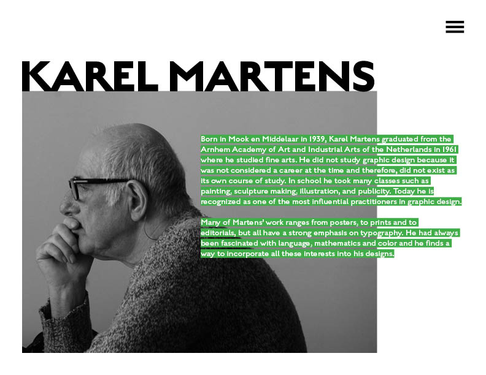
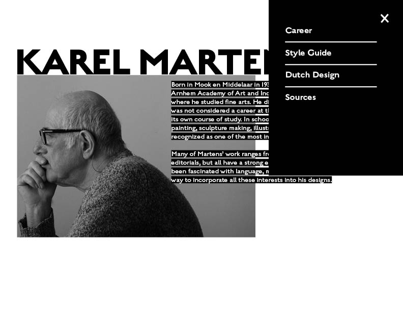
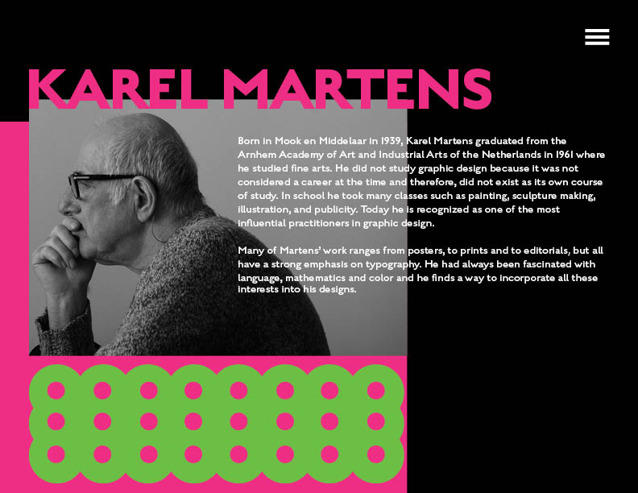
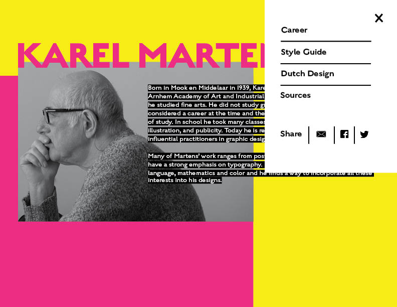
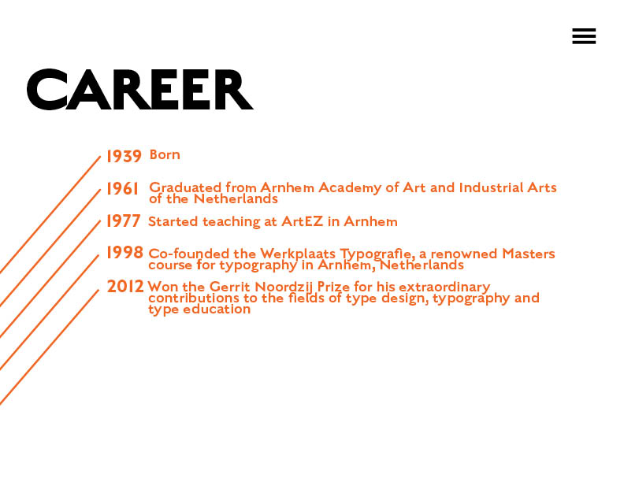
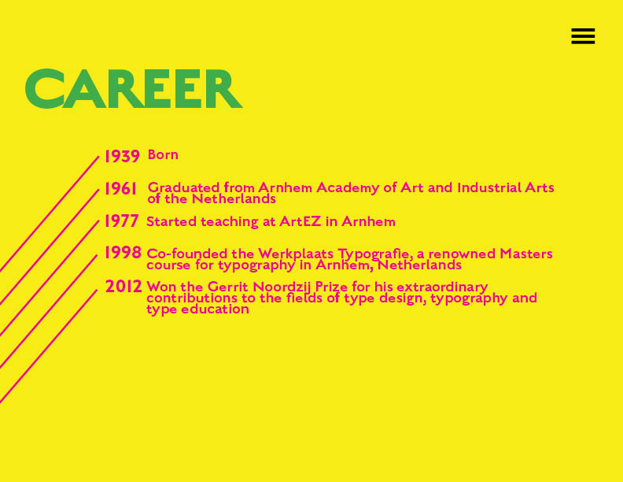

Diffrent layouts with different color choices that can all be rearranged/removed depending on the Creative Director's opinion - some of them are pretty extreme to show possibilities. Need more information about the 'Style Guide' and 'Dutch Design' to complete the pages.
     Some color choices: